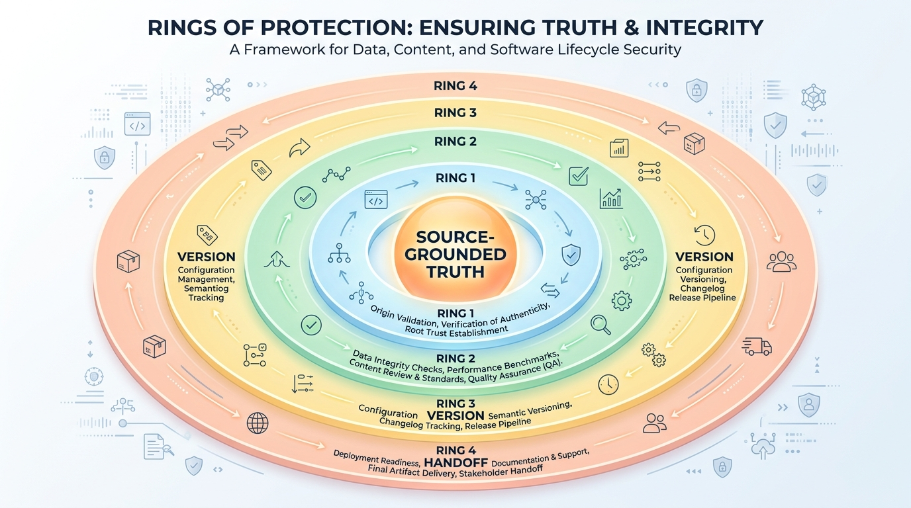
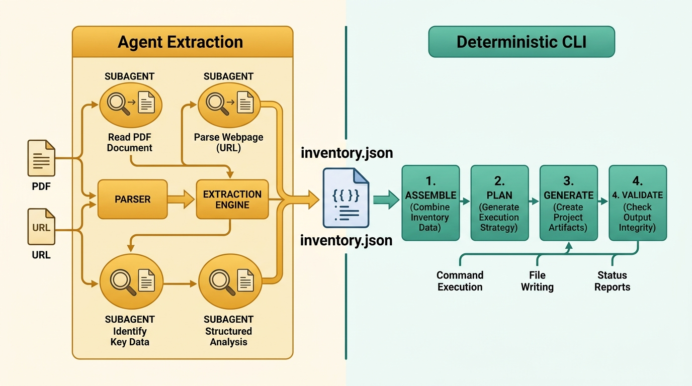
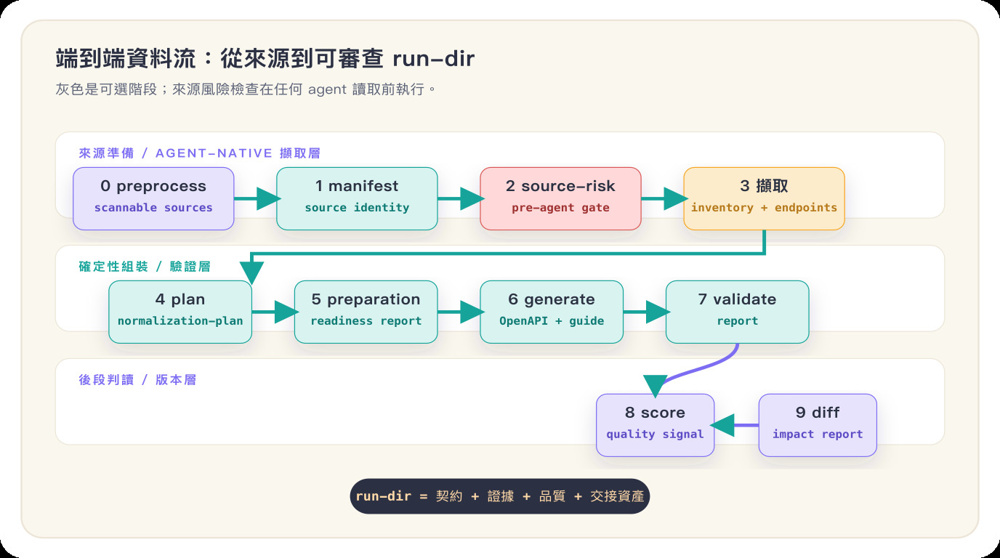
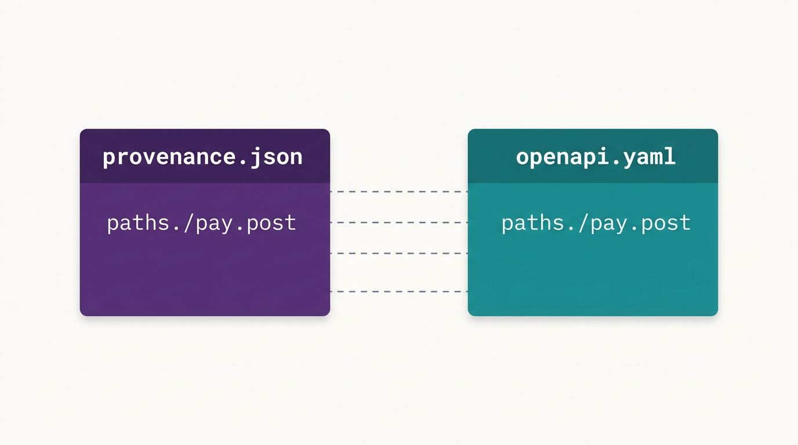
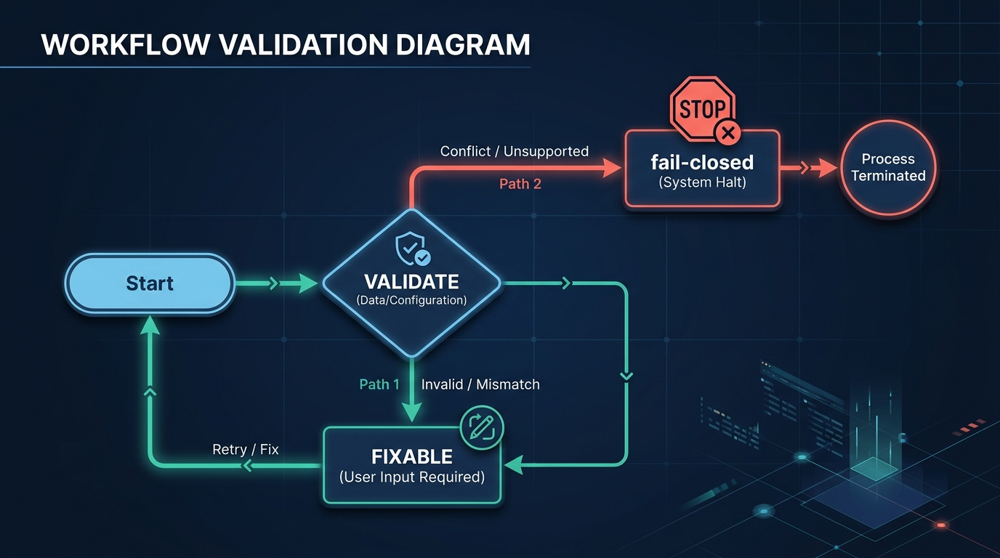

The source documents are the only source of truth.
Anything a source does not state is left as null and recorded in missing — never inferred, never filled in with REST/OAuth conventions.
When validation hits something missing, it fails loudly rather than using guesses to make the docs "look complete." Every design decision in this project exists to hold this line.
The converse also has to be evidenced: "the source does not state it" is a claim that must be earned. source_facts/ mechanically scans Markdown sources for parameter tables and example blocks, and blocks the run when a source plainly documents them but the extraction came back empty; placeholder answers such as "requires further extraction" are blocked the same way. To claim a field genuinely is not in the source, name it in missing — so this gate only ever forces a named gap, never a fabrication.
Be clear about its limits, though: the scan only recognises well-structured Markdown (headings, GFM tables, fenced blocks). If a source is flattened into long single lines it yields zero facts and the gate does nothing. A clean gate exit does not mean the extraction is complete — it catches omissions that can be mechanically proven; everything else still needs human review.
Better to flag "missing" than to fabricate contentFour closed loops: source, quality, version, handoff
loop-apidoc's engineering focus is to make source, quality, version, and handoff all machine-reproducible, human-verifiable, and pickup-ready for downstream users — not just to produce a document.

Source-grounded loop
sources → extraction → provenanceEvery output must trace back to a source citation; information a source doesn't state is left as missing, not filled in by convention.
Quality loop
preparation · validate · scorepreparation flags risks before generation, validation blocks errors, and score turns the finished product into a comparable quality signal.
Version loop
run-dir → diff/reportTwo runs can be classified into breaking/additive/changed/source_only, giving version updates a downstream-impact reading.
Handoff loop
integration-contract · examples · handoff/OpenAPI is the contract; the derived Postman collection, SDK hints, task list, and examples help the next engineer pick it up.
Two stages: agent extraction ‖ deterministic CLI back half
This is the mental model you most need to build first. The whole pipeline is split in two, with two JSON files as the only boundary in between; each side can be tested and swapped independently.

agent extraction (Claude Code / Codex)
- Read-only subagent fan-out: the main agent dispatches multiple subagents, each of which only reads files / searches / fetches URLs and returns structured JSON, never writing files.
- The main agent consolidates the returned JSON and writes it into the seam files.
- Extraction is staged per
SKILL.md(see the ten stages below), ensuring only what the sources actually state gets recorded.
inventory.json
endpoints/*.json
assemble (deterministic CLI)
- Does not extract; it only assembles the JSON the agent wrote.
- Runs
manifest → plan → preparation → generate → validatein order. - Reports
ok/run_dir/reportvia--json, letting the agent drive corrections itself.
run-agent mode that extracted via the claude -p subprocess, and a NotebookLM backend; both were retired in 2026-06, and now agent-native is the only extraction path.
assemble --architecture-mode shadow. After the legacy report is written, shadow/ maps the in-memory manifest and plan into Core evidence and claims, runs through Core validation only, and writes observational artifacts under <run-dir>/core/. It never approves, publishes, updates Foundry, or changes the legacy status or exit code.
Optional v1 evidence[] references re-materialize before a run exists, verify their digest, and resolve their claim path. Claim paths are bound to exact fragments by explicit_support, derived_support, contradicts, or insufficient. A whole-document legacy citation cannot become supported; inspect relationships.json and projections/provenance.json.
What stages a full run passes through
Every stage has explicit inputs / outputs (artifacts). The ones marked in grey are optional; preparation, score, diff, review, and handoff extend a run from mere "generation" into a reviewable, comparable, handoff-ready engineering asset.

CLI commands, each with its own job
The CLI entry point is Typer (cli.py). Note: extraction is not in the CLI — that's the agent's job; the CLI handles the back half and tooling steps (source processing, URL evidence, source quality, run handling, asset governance, and local human review).
PDF → markdown preprocessing (optional), making sources easier for the agent to read.
Scan local sources + URLs and build manifest.json.
Pin a single Swagger/OpenAPI JSON/YAML URL as an immutable local source and build a direct coverage ledger.
Download the entry page just once to build a sidebar navigation index (coverage universe); never auto-fetches child pages.
Select catalog nodes by explicit scope (branch/keyword) as reading starting points; downloads no URLs.
Cache all catalog pages and build local body/link/entity indexes (corpus.json); no model involved.
Directly cache a single entry page, for an empty catalog or a single-page document.
Normalize a static HTML snapshot into supported Markdown, keeping a URL/SHA-256 provenance sidecar.
Output candidate page cards from body links and shared entities; the model reads candidate page bodies only when needed.
Pre-extraction source quality gate: assess sources from traceable observations and output a pass/reject report (which can be passed to assemble --source-quality).
Check whether the agent-produced extraction JSON conforms to the assemble input contract; writes nothing, creates no run-dir. Optional v1 evidence[] references re-materialize, verify their digest, and resolve their claim path. The contract includes the source-fact inventory: when a source section plainly lists a parameter table or example blocks and the extraction left them empty, that is a silent omission rather than "the source does not say" — to claim the latter, name the field in missing.
Assemble the JSON the agent wrote → plan → preparation → generate → validate, reporting via --json; optional --score, --source-quality, --url-coverage.
Exit codes: 0 validation PASS · 1 validation FAIL · 2 extraction input file error (leaves no orphan directory).
Re-run validation on an existing run-dir and produce a report (without regenerating).
Read an existing run-dir's OpenAPI, provenance, manifest, and validation report, and produce a quality score.
Exit codes: 0 pass · 1 needs_attention / fail · 2 run-dir input error.
Compare the version differences between two completed run-dirs.
Exit codes: 0 done · 2 input run-dir has a missing file or bad format (DiffInputError).
The project-local asset governance sub-group (init / import / approve / list / current): import a completed run as a candidate, approve it into a versioned asset, and maintain the current pointer.
A 127.0.0.1 workbench that auto-imports a candidate, compares current/baseline, and saves review/decision.json handoff. Only an explicit human approval updates current; it never calls a model or replaces validation.
Extraction is split into ten stages
Why stage it? To avoid a single answer carrying all the content and losing fidelity. The agent extracts step by step across these ten stages, converging into inventory.json and per-endpoint endpoints/*.json.
One run delivers the contract, the evidence, and the handoff assets
The core artifacts provide the API contract and source grounding; the derived artifacts provide quality reading, version comparison, and downstream engineering handoff.
Standard spec
openapi.yamlOpenAPI 3.1, ready for toolchains and engineers to consume directly without each interpreting the sources themselves.
Traditional Chinese integration guide
api-guide.zh-TW.mdA human-readable Traditional Chinese guide, so you don't have to slog through the original.
Source provenance
provenance.jsonEvery output states which source and which section it came from, so each can be cross-checked one by one.
Validation report
validation/reportLists where things are complete and where there are gaps / conflicts, giving quality an auditable basis.
Quality score
score/score.{json,md}Turns openapi_validity, completeness, consistency, source_grounding, and reviewability into comparable scores.
Handoff pack
handoff/ · examples/A task list, Postman collection, SDK hints, and request examples to help the integrating engineer take over.
Manual review page
review.htmlA single-file HTML you can open offline, gathering scope, sources, gaps, and API structure onto one page for a quick human check.
No speculation, enforced by aligning targets one by one
This is the key mechanism by which "never guess" is machine-enforced: the target strings in provenance.json align one-to-one with OpenAPI locations.

The no-speculation check cross-references exactly these targets: anything entering the output must trace back to a source-grounded plan item, or it counts as a violation. The aligned locations include paths.{path}.{method}, components.schemas.{name}, and components.securitySchemes.{name}.
Validation issues get classified, not blindly retried
There is no CLI built-in correction loop. assemble reports the classification result, and correction is driven by the agent itself: go back and re-read the sources, overwrite the corresponding JSON, and run again, for up to 3 rounds. Issues fall into two categories:

Fixable (FIXABLE)
The artifact itself is wrong → the agent corrects the JSON and regenerates.
Required information is missing → the agent goes back to re-read the affected source and fills in that piece.
Not fixable (fail-closed)
The source can't be confirmed / sources conflict / an unsupported assertion → do not fill it in; report it faithfully as a gap or conflict. This is exactly where the core invariant is enforced.
On version change, classify by downstream impact into four buckets
diff compares the old and new completed run-dirs of the same API, looking at "will this revision break downstream integrations" rather than "which words in the source changed." Each difference is assigned to one of the four impacts below and sorted by severity from high to low, so you can see at a glance whether to block it and whom to notify.
Breaking breaking
Could break existing integrations outright; highest risk.
For example: removing an endpoint (operation removed), making an existing field/parameter required (became required), adding a required parameter, dropping a response or security scheme, or a schema structure change.
→ Block before release; proactively notify all integrators to adjust.
Additive additive
Purely adds things, usually backward-compatible.
For example: adding an endpoint (operation added), adding an optional parameter/field, adding a response or media type, or adding a schema / security scheme.
→ Safe to adopt; downstream decides for itself whether to use the new features.
Changed changed
Existing content changed, but not necessarily breaking compatibility.
For example: a parameter/field's description text changed (description changed), a servers address updated, info version metadata updated, or an unreferenced schema in components removed.
→ Read what changed and confirm there's no hidden impact on your side.
Source only source_only
The source or metadata moved, but the final API contract didn't change.
For example: the source file itself changed (manifest source changed), provenance tracing adjusted, or validation / preparation report contents changed, but the OpenAPI spec itself is unaffected.
→ Rest easy, the spec is unchanged; if you care, go back and see why the source moved.
Comparison scope: OpenAPI paths · methods · parameters · schemas · security · webhooks, integration-contract, provenance, the validation summary, and manifest (the first version does not compare the Markdown guide or examples). Output is written to diff/report.{json,md}; exit code 0 done, 2 means the input run-dir has a missing file or bad format (DiffInputError).
How the code is split into packages
Principle: apart from a few I/O exits, all other modules are pure functions, which makes them easy to unit-test. When making changes, hold this boundary so every loop can be verified independently.
| Package | Responsibility |
|---|---|
manifest/ | Scan local sources + build manifest.json |
agentcli/ | assemble.py (assemble JSON → plan→preparation→generate→validate), input_schema.py (pydantic validation at the boundary), evidence.py (read-side v1 exact-evidence materialization/digest and claim-path verification), gate.py/verify.py (the extraction-contract check for verify-extraction, including the source-fact and deferral gates from source_facts/, writes nothing), extraction.py (inventory → plan answers), preprocess.py (PDF→markdown) |
shadow/ | Opt-in legacy/Core bridge and in-memory runner; only shadow/report.py writes the observational core/ artifact set or a safe error report. |
extraction/ | Shared models + utilities (stages / questions / store / jsonblock) |
plan/ | Normalization plan + source-match classification |
preparation/ | Pre-generation readiness assessment + preparation-report (report.py writes files) |
generate/ | Generate OpenAPI / Markdown / review.html / provenance / examples / handoff (writes files) |
validate/ | Structure / completeness / consistency / no-speculation checks + report |
run/ | run-id generation, result/status models, writing the plan into the run-dir (writes files) |
score/ | Read a completed run-dir and produce score/score.{json,md} with five weighted categories (report.py writes files) |
diff/ | loader.py / compare.py / models.py / report.py (report.py writes files) |
freshness/ | A cheap scheduled freshness gate: record.py writes a baseline fingerprint from a completed run-dir (sha256 for local sources, one version signal per URL source; refuses to overwrite without --force), signals.py recomputes and classifies the current signal (network reads, writes nothing), check.py aggregates one docset, batch.py fans the gate across a watchlist (a per-item error is captured in that item's result rather than aborting the batch), report.py writes the reports. The exit codes are the contract: 0 unchanged, 1 changed, 2 inconclusive |
source_quality/ | Pre-extraction source quality assessment and source version diff report; a pass report can be retained with the run-dir for audit (writes files) |
source_facts/ | Source-fact inventory: markdown.py mechanically scans Markdown sources for endpoint declarations, parameter tables and example blocks; collect.py reads the manifest-named sources (this package's only file-reading exit); gate.py compares them against the extraction JSON (resolving schema_ref into inventory.schemas transitively, so a shared body type is deduplication rather than an omission) and deferral.py rejects placeholder answers |
gitbook_llms.py / markdown_drafts/ | Deterministic GitBook acquisition fetches one llms.txt, safely caches every in-scope Markdown page plus provenance/coverage, then scans manifest-named Markdown into non-authoritative line-cited endpoint/table/example drafts. These drafts assist review and never replace source_facts/ or final extraction. |
url_catalog.py / url_corpus.py | Bounded URL navigation index, page caching, and related candidates, letting the agent read web docs from local evidence (writes files) |
foundry/ | Project-local asset governance: docsets, candidate import, and asset approval, maintaining the current pointer and review.state (writes files) |
review/ | Local single-user workbench: auto-import a candidate, compare current/baseline, persist structured handoff, and update current through Foundry only after explicit human approval (writes files) |
Marked rows contain file I/O exits: generate/, run/, shadow/report.py, preparation/report.py, score/report.py, diff/report.py, source_quality/, freshness/, the URL corpus cache, foundry/, and review/workflow.py writing through Foundry. adapters/fragments.py is a read-side I/O exit that materializes exact fragments; Core and Domain remain pure.
Glossary · What to read next
Glossary
- seam
- The only boundary between the two stages (inventory.json + endpoints/*.json), and also the cut point for testing.
- manifest
- The source inventory file, recording which sources and URLs were scanned.
- normalization-plan
- The plan after normalizing the extraction results; the shared input for generate and validate.
- provenance
- Source provenance; target aligns one-to-one with OpenAPI locations.
- preparation
- Pre-generation readiness assessment; in the quality loop, it flags blockers and things to watch first.
- score
- The quality score of a completed run-dir, used for back-half reading in the CI or review profile.
- handoff
- The engineering handoff pack derived from OpenAPI and the integration-contract; not a new contract source.
- fail-closed
- When something can't be confirmed / conflicts, choose "don't output" rather than "guess one."
- run-dir
- The output directory of a single run, holding all of that run's artifacts.
What to read next
- Run it once — install per
README.md(uv sync) and walk through with a sample frombenchmarks/. - Architecture details —
docs/ARCHITECTURE.md: the seam, package map, data flow tables. - Extraction behavior —
skills/loop-apidoc/SKILL.md: how the agent actually reads sources and stages the work. - Design basis — the enduring product decisions in
docs/DESIGN_DECISIONS.md.